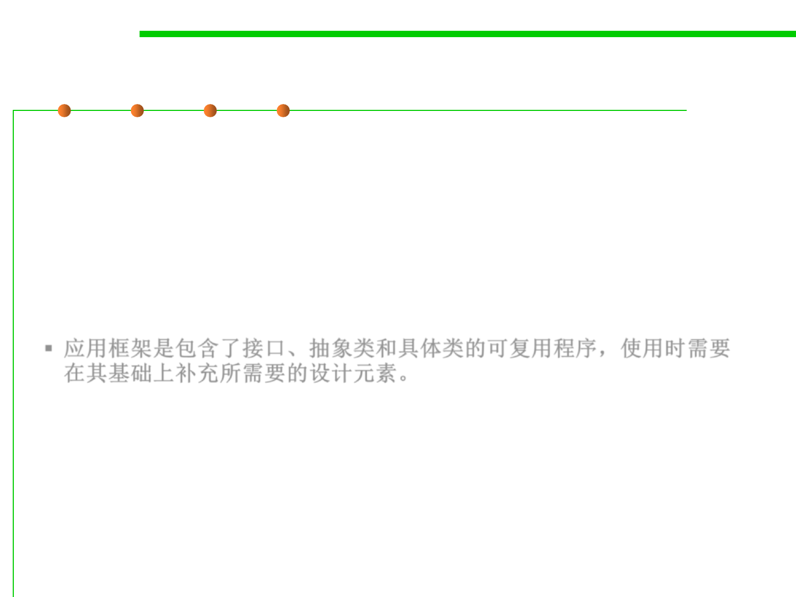

5.1 Metrics, Morphology and External Observations of Reusability
Application Frameworks
▪ Frameworks are for sub-system design containing collection of
abstract and concrete classes along with interfaces between each
class.
▪ A sub-system is implemented by adding components to fill in
missing design elements and by instantiating the abstract classes
▪ Frameworks are reusable entities
▪ 应用框架是包含了接口、抽象类和具体类的可复用程序，使用时需要
在其基础上补充所需要的设计元素。